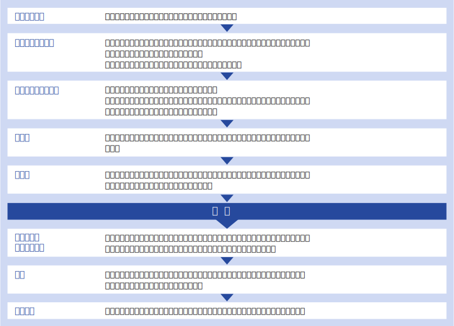
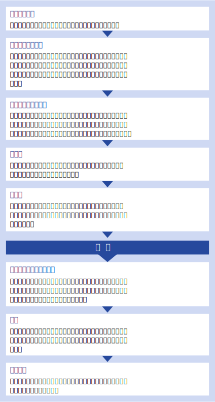

医療や健康に関わるすべての機関、企業のニーズに対し、ステークホルダーや生活者とのよりよい関係を構築しながら総合的に課題解決を図ります。
多様なメディアやソーシャル上で医療情報が溢れるいま、生活者にとって有益な情報を選択することが難しい時代といわれています。 適切なPR活動によって生活者、メディアからの信頼を獲得し、医療機関、製薬企業などの情報提供者との懸け橋となります。
専門性を深化させ、ヘルスケア広報のよりよいあり方を追求します。
医療・ヘルスケア業界特有の情報発信を熟知しているココノッツならではのメッセージ設計
医療・ヘルスケアの広報活動を実施する上で押さえておくべき法規制や広告ガイドラインなどを踏まえた上で、ココノッツはお客様に適切な広報活動をご提案します。
お客様のブレーン・パートナーとして
広報活動の成功には信頼できるパートナーとの出会いも大切です。環境分析から広報施策の策定・実施まで、ココノッツはお客様のよきパートナーとなるよう努力し、実りある広報活動を展開してまいります。
企画提案から施策実施まで一貫したサポート
目指す成果を得るために、ココノッツでは、広報戦略の立案から実施まで責任者が一貫してサポートいたします。
医療を専門とするジャーナリストとのネットワーク
ココノッツは医療を専門とするジャーナリストと日常的にネットワークを維持しており、社会や記者の興味、関心などを把握することにも力を注いでいます。
医療者との協力関係を持ちながら広報活動を展開
医学界に特有の考え方や慣習を理解しておくことも大切です。ココノッツは、医師をはじめとする医療従事者との協力関係を持ちながら広報活動を展開してまいります。
実施体制
ココノッツには医療関連の事業会社の経験を持つメンバーのほか、webメディア運営会社在籍経験者、薬事承認に関わる事務経験者、デザイナーなど 多彩なメンバーが在籍しています。各プロジェクトやクライアント様のニーズに応じ、適切なチームで担当させていただきます。
経験疾患領域・製品
がん、循環器疾患、感染症、糖尿病、脳神経疾患、精神疾患、筋疾患、発達障害、血液疾患、整形外科疾患、眼疾患、生殖医療、基礎医学
ワクチン、化学療法剤、血液製剤、循環器用剤、眼科用製剤、ホルモン剤、高分子医薬、人工関節等の埋め込み型医療機器、MRI等の画像診断機器、生体モニター、手術用装置、病理診断用機器、検査用試薬、洗滌滅菌装置、電子カルテ、診療データ処理、開発業務受託 など
サービス提供の流れ
サービス提供の流れ
契約形態と費用について
お客様のニーズに応じて適切な形態をご提案させていただきます。
| リテイナー契約 | 原則として年間を通し、お客様のコミュニケーション上の課題に総合的に取り組みます。 毎月定額のリテイナーフィーをお支払いいただき、お打ち合わせから広報計画立案、パブリシティ活動、取材サポート等、 お客様のニーズに合わせて内容を決定いたします。 |
|---|---|
| プロジェクト個別契約 | プレスセミナーなどのメディアイベント、危機管理対応、メディアトレーニングなど、単一プロジェクトのご相談にも応じます。 御見積等お気軽にご相談ください。 |
費用について：
担当スタッフがサービスやノウハウを提供する時間に準じた料金設定をしています。
リテイナー契約の場合、サービス内容や依頼内容に基づいて、担当チームを編成し、担当スタッフの時間単価と想定活動時間をもとに固定の月額料金を設定します。
またプロジェクト契約の場合も原則として同様の考え方で料金を設定いたします。